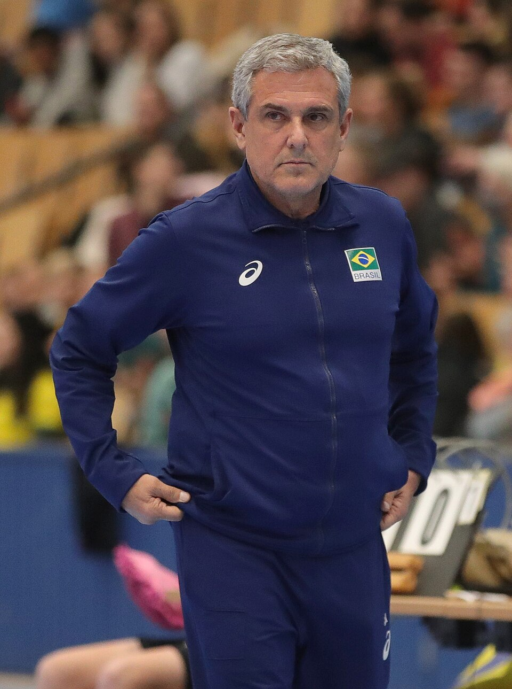

José Roberto Guimarães ocupa um lugar singular na história do vôlei. Campeão olímpico com a seleção masculina, e bicampeão com a seleção feminina, o treinador construiu uma carreira marcada por longevidade, adaptação e capacidade de formar equipes competitivas em diferentes gerações.
Seu currículo olímpico, por si só, já o coloca em uma categoria especial. Zé Roberto é o único técnico da história do voleibol a conquistar o ouro nos Jogos Olímpicos comandando equipes dos dois gêneros. A distinção é reconhecida pelo Comitê Olímpico do Brasil e pelo International Volleyball Hall of Fame.
Mas resumir José Roberto aos três títulos olímpicos seria reduzir uma trajetória que começou dentro da quadra, passou pela formação de atletas, alcançou o topo com a seleção masculina e encontrou na seleção feminina seu trabalho mais longo e emblemático.
A trajetória
José Roberto Lages Guimarães nasceu em 31 de julho de 1954, em Quintana, no interior de São Paulo. Antes de se tornar treinador, foi jogador de voleibol e atuou como levantador. Sua relação com os Jogos Olímpicos começou ainda como atleta: ele integrou a seleção brasileira masculina em Montreal 1976.
A entrada no vôlei ocorreu na juventude. Zé Roberto iniciou sua formação esportiva em Santo André, depois de ter crescido em uma família fortemente ligada ao futebol. Ainda adolescente, chegou à seleção paulista e posteriormente passou pelas categorias de base e pela seleção brasileira.
Depois de uma longa trajetória como jogador, também com passagem pelo voleibol italiano, encerrou a carreira nas quadras e começou a construir o caminho que o transformaria em técnico.
O início da carreira como treinador
A transição para o banco começou em 1988, quando recebeu o convite para trabalhar como auxiliar de Bebeto de Freitas na seleção brasileira masculina. O período serviu como formação prática antes de assumir funções de maior responsabilidade. Em 1991, passou pelas seleções femininas de base.
A grande oportunidade chegaria rapidamente.
Em 1992, Zé Roberto foi escolhido para comandar a seleção brasileira masculina adulta nos Jogos Olímpicos de Barcelona. Era um treinador ainda sem experiência como comandante principal de uma seleção adulta, mas aquela decisão mudaria tanto sua carreira quanto a história do vôlei brasileiro.
O primeiro ouro olímpico
O Brasil conquistou em Barcelona 1992 seu primeiro ouro olímpico no voleibol masculino. José Roberto Guimarães estava à frente de uma geração que reunia jogadores como Marcelo Negrão, Tande, Maurício e Carlão.
O título marcou definitivamente a carreira do treinador e teve enorme impacto na modalidade no país. No ano seguinte, Zé Roberto ainda conquistaria com o masculino a Liga Mundial de 1993, além de outras colocações de destaque em competições internacionais durante aquele período.
O que já seria suficiente para assegurar seu nome na história, entretanto, acabaria se tornando apenas o primeiro capítulo de sua coleção olímpica.
A chegada à seleção feminina
Zé Roberto assumiu o comando da seleção brasileira feminina em 2003. Mais de duas décadas depois, continuou à frente da equipe e passou também a exercer função de coordenação técnica do programa feminino da CBV. A continuidade para o ciclo de Los Angeles 2028 foi anunciada após Paris 2024.
A longevidade impressiona principalmente porque o treinador precisou reconstruir a equipe várias vezes. Atletas campeãs encerraram ciclos, novas protagonistas surgiram, estilos de jogo internacionais mudaram e diferentes potências passaram a disputar espaço no topo do voleibol mundial.
Ainda assim, o Brasil permaneceu competitivo em sucessivas gerações.
O ouro que mudou o patamar da seleção feminina
O primeiro título olímpico de José Roberto com a seleção feminina veio em Pequim 2008.
A conquista colocou o Brasil no topo olímpico do vôlei feminino e transformou definitivamente o currículo do treinador. Aquele ouro também fez de Zé Roberto um técnico campeão olímpico tanto com homens quanto com mulheres, façanha que permanece única na história da modalidade.
O ciclo também consolidou uma geração de atletas que se tornaria referência no esporte brasileiro e preparou o terreno para outro feito ainda mais raro: defender o título olímpico quatro anos depois.
O bicampeonato olímpico
Nos Jogos de Londres 2012, o Brasil voltou ao lugar mais alto do pódio.
A campanha terminou com vitória sobre os Estados Unidos na decisão e confirmou a seleção brasileira como bicampeã olímpica consecutiva sob o comando de José Roberto Guimarães.
Com Barcelona 1992, Pequim 2008 e Londres 2012, Zé Roberto chegou a três ouros como treinador.
A partir dali, sua ligação com os Jogos Olímpicos já não poderia ser analisada apenas pela longevidade. Ele havia vencido em épocas diferentes, com grupos diferentes e comandando os dois programas principais do voleibol brasileiro.
Tóquio e Paris ampliaram a coleção de medalhas
Mesmo depois do bicampeonato, José Roberto seguiu reconstruindo a seleção feminina.
Em Tóquio 2020, disputado em 2021, o Brasil chegou novamente à final e conquistou a medalha de prata. Em Paris 2024, a seleção voltou ao pódio, desta vez com o bronze. Assim, além dos três ouros como treinador, Zé Roberto passou a contabilizar cinco medalhas olímpicas no comando das seleções brasileiras.
A sequência evidencia uma das principais características de sua carreira: a capacidade de permanecer competitivo mesmo após profundas mudanças de elenco.
Os títulos além dos Jogos Olímpicos
A trajetória de Zé Roberto com a seleção feminina não se limita às Olimpíadas.
Sob seu comando, o Brasil acumulou uma extensa coleção de resultados em competições internacionais. O International Volleyball Hall of Fame registra nove títulos do antigo Grand Prix e duas conquistas da Grand Champions Cup, além de mais de 20 medalhas em grandes torneios internacionais com a equipe feminina.
Nos Campeonatos Mundiais femininos, o Brasil também chegou repetidamente ao pódio durante sua passagem. A seleção foi prata em 2006, 2010 e 2022 e bronze em 2014 com Zé Roberto no comando.
Na Liga das Nações, competição que substituiu o Grand Prix no calendário internacional, a seleção também acumulou campanhas de destaque durante sua longa gestão.
Todos os títulos da carreira até 2026
A carreira de José Roberto Guimarães reúne conquistas como jogador e, principalmente, como treinador de clubes e das seleções brasileiras masculina e feminina. Entre os títulos mais importantes e documentados de sua trajetória estão:
Como treinador da Seleção Brasileira masculina
- Jogos Olímpicos — ouro em Barcelona 1992
- World Super Four — campeão em 1992
- Liga Mundial — campeão em 1993
- Campeonato Sul-Americano — campeão em 1993-1995
.
Como treinador da Seleção Brasileira feminina
- Jogos Olímpicos — ouro em Pequim 2008
- Jogos Olímpicos — ouro em Londres 2012
- Grand Prix — campeão em 2004-2005-2006-2008-2009-2013-2014-2016-2017
- Copa dos Campeões — campeão em 2005-2013
- Campeonato Sul-Americano — campeão em 2003-2005-2007-2009-2011-2013-2015-2017-2019-2021-2023-
- Montreux Volley Masters — campeão em 2005-2006-2009-2013-2017
- Troféu Valle d'Aosta — campeão em 2004-2005-2006-
- Copa Pan-Americana — campeão em 2006-2009-2011
- Final Four — campeão em 2008-2009
- Jogos Pan-Americanos — ouro em Guadalajara 2011
- Torneio de Alassio — campeão em 2013
Os nove títulos do Grand Prix estão entre as principais conquistas da passagem de Zé Roberto pela seleção feminina, enquanto a sequência de títulos sul-americanos reforça o domínio continental do Brasil durante grande parte de sua gestão.
Títulos por clubes:
- Liga Nacional 1991/92 — Colgate/São Caetano
- Campeonato Paulista 1997 — Dayvit
- Campeonato Paulista 2001 — BCN/Finasa Osasco
- Campeonato Paulista 2002 — BCN/Finasa Osasco
- Superliga 2002/03 — BCN/Osasco
- Superliga 2003/04 — Finasa/Osasco
- Superliga 2004/05 — Finasa/Osasco
- Supercopa da Itália 2008 — Scavolini Pesaro
- Copa da Itália 2008/09 — Scavolini Pesaro
- Campeonato Italiano 2008/09 — Scavolini Pesaro
- Mundial de Clubes 2010 — Fenerbahçe
- Campeonato Turco 2010/11 — Fenerbahçe
- Liga dos Campeões da Europa 2011/12 — Fenerbahçe
- Taça de Prata 2016 — Barueri
- Superliga B 2017 — Barueri
- Campeonato Paulista 2019 — São Paulo/Barueri
A passagem internacional foi especialmente vitoriosa: Zé Roberto conquistou títulos na Itália e, no Fenerbahçe, foi campeão mundial de clubes, turco e europeu. No projeto de Barueri, levou a equipe da Taça de Prata à elite nacional e posteriormente conquistou o Paulista com o São Paulo/Barueri.
Títulos como jogador
Antes de se transformar em treinador, José Roberto Guimarães também conquistou títulos dentro de quadra como levantador:
- Campeonato Sul-Americano com a Seleção Brasileira — 1975 - 1977
- Campeonato Brasileiro com o Pirelli/Santo André — 1982
O currículo ajuda a dimensionar o tamanho de Zé Roberto no esporte. O ponto máximo são os três ouros olímpicos como treinador que fizeram dele o único técnico da história do voleibol a conquistar o título olímpico dirigindo seleções masculina e feminina.
Um técnico que atravessou gerações
Um dos aspectos mais importantes da história de Zé Roberto é sua capacidade de trabalhar com atletas de períodos completamente diferentes.
Durante mais de duas décadas à frente da seleção feminina, o treinador precisou administrar a saída de campeãs olímpicas, introduzir novas jogadoras e reconstruir hierarquias dentro do grupo sem permitir que o Brasil deixasse de disputar os principais torneios internacionais em alto nível.
Essa longevidade também transformou seu papel.
Ele deixou de atuar apenas como treinador responsável por montar escalações e preparar partidas. Ao assumir também funções de coordenação técnica, passou a participar diretamente da integração entre seleção principal e categorias de base, com atuação no desenvolvimento do programa feminino brasileiro.
A CBV continuava identificando oficialmente José Roberto como técnico da seleção feminina durante a temporada internacional de 2026, confirmando a continuidade do trabalho no ciclo olímpico iniciado após Paris.
Reconhecimento internacional
Em 2024, José Roberto Guimarães foi incluído no International Volleyball Hall of Fame, na categoria treinador.
A entidade destacou justamente a característica que torna sua carreira incomparável: ser o único técnico do voleibol a ganhar medalhas de ouro olímpicas comandando tanto uma seleção masculina quanto uma feminina.
Ele também integra o Hall da Fama do Comitê Olímpico do Brasil, reconhecimento reservado a nomes que tiveram impacto histórico no esporte olímpico nacional.
Um dos maiores técnicos do vôlei
Existem treinadores definidos por um grande time. Outros ficam associados a determinada geração ou a um ciclo vencedor. A dimensão da carreira de José Roberto Guimarães vem justamente do contrário: seus maiores resultados estão distribuídos por décadas.
Ele foi atleta olímpico em 1976. Tornou-se campeão olímpico como técnico do masculino em 1992. Conduziu a seleção feminina ao ouro em 2008 e novamente em 2012. Voltou à final olímpica em Tóquio e ao pódio em Paris 2024. Depois disso, permaneceu no comando para mais um ciclo.
Essa combinação de duração, títulos e capacidade de adaptação explica por que seu nome ultrapassa a comparação apenas com outros treinadores brasileiros. Ao lado de nomes históricos da modalidade, especialmente Bernardinho, José Roberto Guimarães ajudou a consolidar o Brasil entre as grandes potências mundiais do esporte.
Zé Roberto tornou-se parte da própria história do vôlei nacional. Do levantador que disputou Montreal 1976 ao técnico tricampeão olímpico, sua trajetória acompanha diferentes fases do crescimento do Brasil como potência da modalidade.
E há um feito que resume tudo: décadas depois de começar sua relação com a seleção brasileira, Zé Roberto continua sendo o único treinador da história do voleibol capaz de dizer que chegou ao ouro olímpico comandando tanto homens quanto mulheres. É uma marca que transformou uma carreira extraordinária em um legado único no esporte mundial.